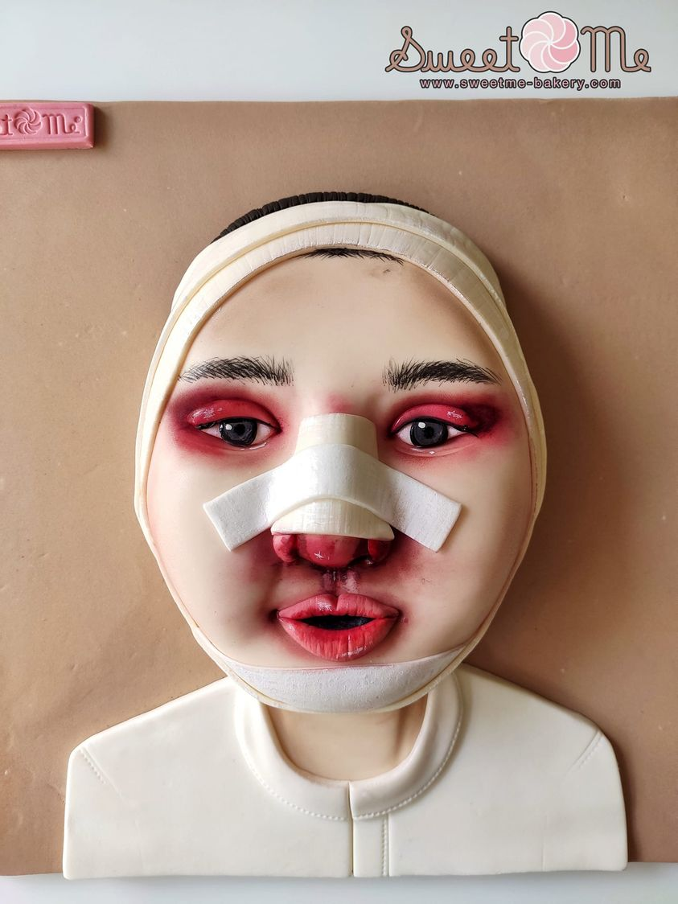

วันแม่แห่งชาติ❤️👩🦰
สิ่งที่อยากบอกแม่
แม่ของฉัน เกิดวันที่ 3 สิงหาคม อายุ 34 ปี ทุกๆเช้าแม่จะขับรถมาส่งฉัน ทำกับข้าวทุกๆเช้าให้ฉันทานก่อนๆไปโรงเรียน แม่เป็นคนใจดีมากใจดีกับเพื่อนๆของฉันด้วย และจะถามเสมอว่าฉันเรียนเป็นอย่างไร เหนื่อยไหม หรือเจอเรื่องอะไรที่โรงเรียนแม่ก็จะให้ฉันเล่าให้แม่ฟัง ตอนเด็กๆตอนฉันอยู่ในท้องแม่บอกว่าฉันดื้อมาก ฉันชอบถีบท้องแม่ แต่แม่ไม่เคยโกรธฉันและเอ็นดูฉันเสมอ มีครั้งหนึ่งตอนฉันไปเข้าค่ายลูกเสือ ฉันไม่อยากกินไข่ปิ้ง แม่ฉันทราบเรื่องก็เลยแอบซื้อไข่ปิ้งมาให้ฉันที่ค่ายลูกเสือ แม่บอกว่ากลัวฉันหิวตอนกลางคืน ฉันดีใจมากที่มีแม่ใจดีแบบนี้


บทกลอนมอบให้แม่
ดวงใจแม่ดวงใจแม่ สะอาดแท้ กว่าทุกสิ่ง
ดวงใจแม่ สะอาดยิ่ง กว่าสิ่งไหน
ดวงใจแม่ สะอาดเกิน กว่าสิ่งใด
ดวงใจแม่ มีไว้ เพื่อลูกเอย
บทเพลงที่มอบให้แม่